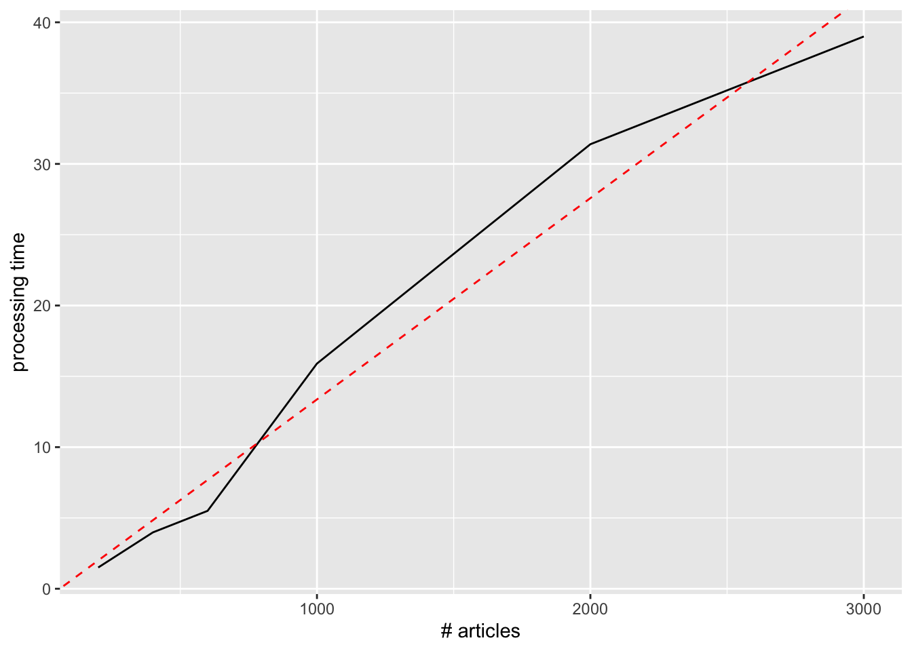
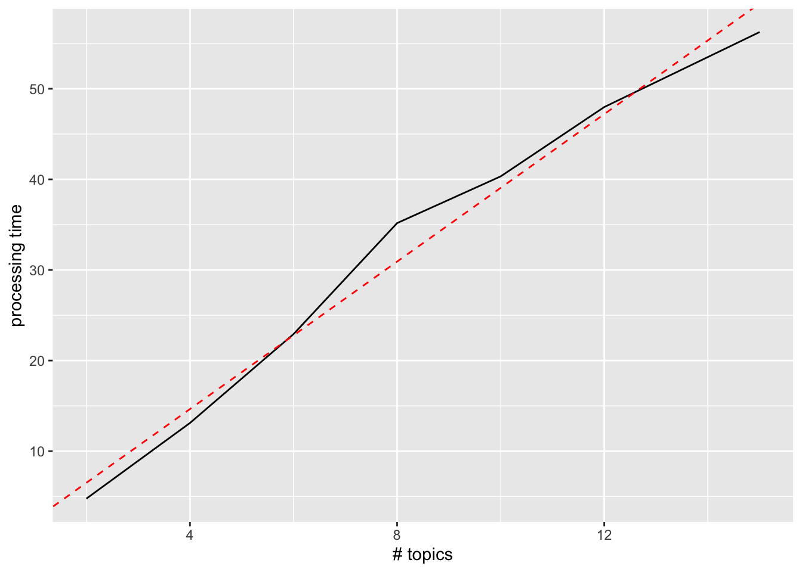

Code
library(tidyverse)
library(here)
library(tidytext)
library(topicmodels)
source(here('common_fxns.R'))library(tidyverse)
library(here)
library(tidytext)
library(topicmodels)
source(here('common_fxns.R'))Here we will implement a Latent Dirichlet Allocation analysis to help tease out topics from the corpus of articles gleaned from the Web of Science search. For more on LDA:
Blei, D. M. (2012). Probabilistic topic models. Communications of the ACM, 55(4), 77–84. https://doi.org/10.1145/2133806.2133826
For an example of topic modeling on which this script is based, see: https://www.tidytextmining.com/topicmodeling
abstr_df <- load_articles(pattern = 'wos_') %>%
filter(topic == 'abstract')
abstr_words_df <- abstr_df %>%
unnest_tokens(input = text, output = word, token = 'words') %>%
anti_join(stop_words, by = 'word') %>%
group_by(title, word) %>%
summarize(n = n())
abstr_words_dtm <- abstr_words_df %>%
cast_dtm(title, word, n)How many latent topics to include? How to identify an appropriate number of topics? Examine processing time (work mac) and how it varies with \(k\) and \(n\).
As \(n\) increases (more articles), the number of terms in the DTM will increase as well, so if LDA processing time is linear with matrix size, then it will be marginally increasing with \(n\).
sample_abstr <- function(n, df = abstr_words_df) {
titles_vec <- df$title %>% unique()
titles_sample <- sample(titles_vec, size = n, replace = FALSE)
out_df <- df %>%
filter(title %in% titles_sample)
return(out_df)
}
words_per_sample <- function(n, df = abstr_words_df) {
### take the df = abstr_words_df, filter it for n articles, return word count
term_count <- sample_abstr(n = n, df = df) %>%
.$word %>% n_distinct()
return(term_count)
}
n_vec <- 2^(0:11)
words_vs_n_df <- data.frame(n = n_vec,
term_count = sapply(n_vec, words_per_sample))
lm(term_count ~ sqrt(n), data = words_vs_n_df)
Call:
lm(formula = term_count ~ sqrt(n), data = words_vs_n_df)
Coefficients:
(Intercept) sqrt(n)
-741.6 507.1 ggplot(words_vs_n_df, aes(x = n, y = term_count)) +
geom_line() +
geom_function(fun = function(x) -729 + 499 * sqrt(x), color = 'red', linetype = 'dashed')
Word count goes approximately as the square root of \(n\), so doubling \(n\) increases word count by a factor of ~1.4 (on top of doubling the number of articles).
# abstr_sample_dtm <- sample_abstr(n = 3000) %>%
# cast_dtm(title, word, n)
# system.time({
# abstr_lda <- topicmodels::LDA(abstr_sample_dtm, k = 4, control = list(alpha = .1, seed = 4321))
# })
### on for k = 4: n = 200, 1.5 s; n = 400, 3.98 s; n = 600, 5.5 s; n = 1000, 15.9 s; n = 2000, 31.39 s; n = 3000, 39.0 s
p_df <- data.frame(n = c(200, 400, 600, 1000, 2000, 3000),
t = c(1.5, 3.98, 5.5, 15.9, 31.39, 39.0))
lm(t ~ n, p_df)
Call:
lm(formula = t ~ n, data = p_df)
Coefficients:
(Intercept) n
-0.84536 0.01421 ggplot(p_df, aes(x = n, y = t)) +
geom_line() +
geom_abline(intercept = -.845, slope = .014214, color = 'red', linetype = 'dashed') +
labs(x = '# articles', y = 'processing time')
Processing time seems approximately linear with number of articles…
# abstr_sample_dtm <- sample_abstr(n = 1000) %>%
# cast_dtm(title, word, n)
# system.time({
# abstr_lda <- topicmodels::LDA(abstr_sample_dtm, k = 15, control = list(alpha = .1, seed = 4321))
# })
### on sample of 1000 articles: k = 2, 4.76 s; k = 4, 13.11s; k = 6, 22.92 s; k = 8, 35.17; k = 10, 40.33; k = 12, 47.98; k = 15, 56.26
p_df <- data.frame(k = c( 2, 4, 6, 8, 10, 12, 15),
t = c(4.76, 13.11, 22.92, 35.17, 40.33, 47.98, 56.26))
lm(t ~ k, p_df)
Call:
lm(formula = t ~ k, data = p_df)
Coefficients:
(Intercept) k
-1.630 4.069 ggplot(p_df, aes(x = k, y = t)) +
geom_line() +
geom_abline(intercept = -1.63, slope = 4.0691, color = 'red', linetype = 'dashed') +
labs(x = '# topics', y = 'processing time')
Processing time seems approximately linear with number of topics… maybe tapering off toward the end there?